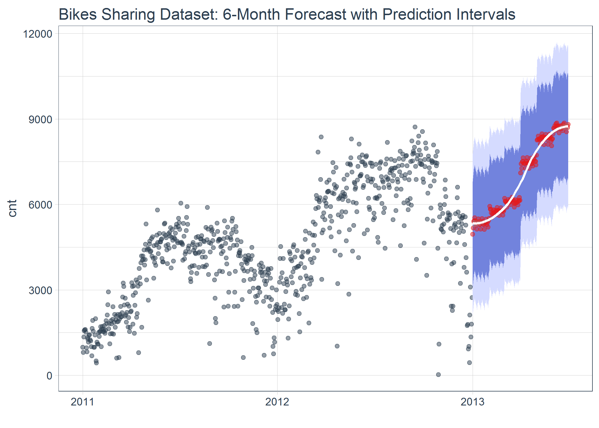

A toolkit for working with time series in R
Documentation
Full Time Series Machine Learning and Feature Engineering Tutorial: Showcases the (NEW)
step_timeseries_signature()for building 200+ time series features.Visit the timetk website documentation for tutorials and a complete list of function references.
Benefits
The timetk package enables a user to more easily work with time series objects in R. The package has tools for inspecting and manipulating the time-based index, expanding the time features for data mining and machine learning, and converting time-based objects to and from the many time series classes. The following are key benefits:
- Index extraction: get the time series index from any time series object.
- Understand time series: create a signature and summary from a time series index.
- Build future time series: create a future time series from an index.
-
Coerce between time-based tibbles (
tbl) and the major time series data typesxts,zoo,zooreg, andts: Simplifies coercion and maximizes time-based data retention during coercion to regularized time series (e.g.ts).
An example of the forecasting capabilities as shown in vignette TK03 - Forecasting Using a Time Series Signature with timetk.

Tools
The package contains the following functions:
Get an index:
tk_indexreturns the time series index of time series objects, models. The argumenttimetk_idxcan be used to return a special timetk “index” attribute for regularizedtsobjects that returns a non-regularized date / date-time index if present.Get critical timeseries information:
tk_get_timeseries_signatureandtk_get_timeseries_summarytakes an index and provides a time series decomposition and key summary attributes of the index, respectively. Thetk_augment_timeseries_signatureexpedites adding the time series decomposition to the time series object.Make a future timeseries:
tk_make_future_timeseriesmodels a future time series after an existing time series index.Conversion functions:
tk_tbl,tk_ts,tk_xts,tk_zoo, andtk_zooregconvert time-based tibblestblto and from each of the main time-series data typesxts,zoo,zooreg,ts, maintaining the time-based index.
Getting started
Load libraries and start with some time series data
Use the FB time series.
FB_tbl <- FANG %>% filter(symbol == "FB") FB_tbl #> # A tibble: 1,008 x 8 #> symbol date open high low close volume adjusted #> <chr> <date> <dbl> <dbl> <dbl> <dbl> <dbl> <dbl> #> 1 FB 2013-01-02 27.4 28.2 27.4 28 69846400 28 #> 2 FB 2013-01-03 27.9 28.5 27.6 27.8 63140600 27.8 #> 3 FB 2013-01-04 28.0 28.9 27.8 28.8 72715400 28.8 #> 4 FB 2013-01-07 28.7 29.8 28.6 29.4 83781800 29.4 #> 5 FB 2013-01-08 29.5 29.6 28.9 29.1 45871300 29.1 #> 6 FB 2013-01-09 29.7 30.6 29.5 30.6 104787700 30.6 #> 7 FB 2013-01-10 30.6 31.5 30.3 31.3 95316400 31.3 #> 8 FB 2013-01-11 31.3 32.0 31.1 31.7 89598000 31.7 #> 9 FB 2013-01-14 32.1 32.2 30.6 31.0 98892800 31.0 #> 10 FB 2013-01-15 30.6 31.7 29.9 30.1 173242600 30.1 #> # … with 998 more rows
Expand the time series signature
Get the time series signature from the index, a tibble of decomposed features that are useful for data mining and machine learning.
tk_get_timeseries_signature(idx) #> # A tibble: 1,008 x 29 #> index index.num diff year year.iso half quarter month month.xts #> <date> <int> <int> <int> <int> <int> <int> <int> <int> #> 1 2013-01-02 1.36e9 NA 2013 2013 1 1 1 0 #> 2 2013-01-03 1.36e9 86400 2013 2013 1 1 1 0 #> 3 2013-01-04 1.36e9 86400 2013 2013 1 1 1 0 #> 4 2013-01-07 1.36e9 259200 2013 2013 1 1 1 0 #> 5 2013-01-08 1.36e9 86400 2013 2013 1 1 1 0 #> 6 2013-01-09 1.36e9 86400 2013 2013 1 1 1 0 #> 7 2013-01-10 1.36e9 86400 2013 2013 1 1 1 0 #> 8 2013-01-11 1.36e9 86400 2013 2013 1 1 1 0 #> 9 2013-01-14 1.36e9 259200 2013 2013 1 1 1 0 #> 10 2013-01-15 1.36e9 86400 2013 2013 1 1 1 0 #> # … with 998 more rows, and 20 more variables: month.lbl <ord>, day <int>, #> # hour <int>, minute <int>, second <int>, hour12 <int>, am.pm <int>, #> # wday <int>, wday.xts <int>, wday.lbl <ord>, mday <int>, qday <int>, #> # yday <int>, mweek <int>, week <int>, week.iso <int>, week2 <int>, #> # week3 <int>, week4 <int>, mday7 <int>
Get a summary of the time series
Get the time series summary from the index, a single-row tibble of key summary information from the time series.
# General summary tk_get_timeseries_summary(idx)[1:6] #> # A tibble: 1 x 6 #> n.obs start end units scale tzone #> <int> <date> <date> <chr> <chr> <chr> #> 1 1008 2013-01-02 2016-12-30 days day UTC # Frequency summary tk_get_timeseries_summary(idx)[6:12] #> # A tibble: 1 x 7 #> tzone diff.minimum diff.q1 diff.median diff.mean diff.q3 diff.maximum #> <chr> <dbl> <dbl> <dbl> <dbl> <dbl> <dbl> #> 1 UTC 86400 86400 86400 125096. 86400 345600
Make a future time series
Use an index to make a future time series.
holidays <- c("2017-01-02", "2017-01-16", "2017-02-20", "2017-04-14", "2017-05-29", "2017-07-04", "2017-09-04", "2017-11-23", "2017-12-25") %>% ymd() idx_future <- tk_make_future_timeseries( idx, n_future = 366, skip_values = holidays, inspect_weekdays = TRUE) head(idx_future) #> [1] "2017-01-03" "2017-01-04" "2017-01-05" "2017-01-06" "2017-01-09" #> [6] "2017-01-10"
tail(idx_future) #> [1] "2017-12-21" "2017-12-22" "2017-12-26" "2017-12-27" "2017-12-28" #> [6] "2017-12-29"
Coerce time series without specifying order.by or worrying about coercion issues
Coercion to xts, zoo, or ts is simplified. The data is ordered correctly automatically using the column containing the date or datetime information. Non-numeric columns are automatically dropped with a warning to the user (the silent = TRUE hides the warnings).
# xts FB_xts <- tk_xts(FB_tbl, silent = TRUE)
# zoo FB_zoo <- tk_zoo(FB_tbl, silent = TRUE)
# ts FB_ts <- tk_ts(FB_tbl, start = 2013, freq = 252, silent = TRUE)
This covers the basics of the timetk package capabilities. Here’s how to get started.
Installation
Download development version with latest features:
# install.packages("devtools") devtools::install_github("business-science/timetk")
Or, download CRAN approved version:
install.packages("timetk")
Acknowledgements: Standing On Shoulders
A lot of innovative time series and forecasting work is going on that ultimately benefits the community. We’d like to thank the following people and packages that came before timetk in time series analysis and machine learning.
-
maltese: Similar in respect totimetkin that it enables machine learning-friendly data frame generation exposing a number of critical features that can be used for forecasting. -
lubridate: Contains an excellent set of functions to extract components of the date and datetime index. -
xtsandzoo: Fundamental packages for working with time series enabling creation of a time series index fortsclass and calculating periodicity.
Further Information
The timetk package includes a vignette to help users get up to speed quickly:
- TK00 - Time Series Coercion Using
timetk - TK01 - Working with the Time Series Index using
timetk - TK02 - Making a Future Time Series Index using
timetk - TK03 - Forecasting Using a Time Series Signature with
timetk